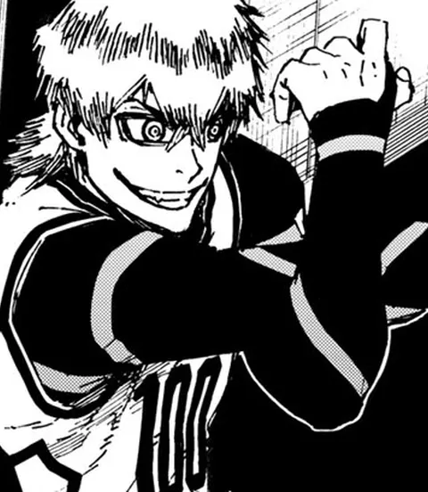

Blue Lock — outros jogadores
Taiga Tsunzaki
Taiga Tsunzaki: jogador do projeto Blue Lock. Estreia no mangá: capítulo 93.
- Ocupação
- Estudante
- Posição
- Atacante
- Ranking Blue Lock
- 100º
- Números de camisa
- 100 (2ª e 3ª Seleção)
- Estreia no mangá
- Capítulo 93
Trajetória: fase → time → nº
- 2ª Seleção → Time White → nº 100
- 3ª Seleção → Time Blue Lock / Time C → nº 100
- Neo Egoist League → Manshine City (reserva)
Fonte: Blue Lock Wiki – Taiga Tsunzaki (dados do quadro de informações; campos ausentes na wiki foram omitidos)